Shipping
- This article is primarily about the game mechanic. For the placeable object, see Farm Buildings.
| “ | “If you have anything to sell, just place it in this box here. I'll come by during the night to collect it.” |
| — Lewis |
Shipping allows the player to sell items by placing them into a Shipping Bin or Mini-Shipping Bin. Gold is received after going to sleep for the night.
Iridium quality items have the highest value, followed by gold, silver, and regular quality items, in that order. The amount of gold received from shipping is the same as when selling to a merchant. The main difference is that merchants will pay immediately, while the gold received from shipping is given the next day. Also, not all items can be sold using both methods: some items can be sold using only the shipping bin; other items that cannot be placed in the shipping bin can be sold to merchants (notably, weapons can be sold to the Adventurer's Guild). Items sold to merchants are not included in the statistics on the Collection tab and do not count towards shipping-specific Achievements. The player must ship one of every item shown in the Shipping Collection to achieve 100% perfection.
The shipping bin opens its lid when the player approaches it. To ship an item (or stack of items), approach the shipping bin and "use" it (right-click on it), then left-click on the item in inventory. Alternatively, select an item in inventory, approach the shipping bin, and left-click on the bin.
If a mistake is made and the wrong item is put in the shipping bin, "use" the bin at any time during the same day to display the last item. Click on that item to add it back into inventory. Only the last item shipped can be retrieved.
Construction
Each Farm Map comes with one preinstalled shipping bin, which can be moved. It can also be demolished if the player has another Shipping Bin (note that Mini-Shipping Bins are excluded for this purpose).
The player may purchase additional Shipping Bins at the Carpenter's Shop for 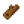 250g and
250g and
Collection
Shown below is the Shipping Collection tab of the player menu. The game keeps track of which of the shown items are shipped and how many.
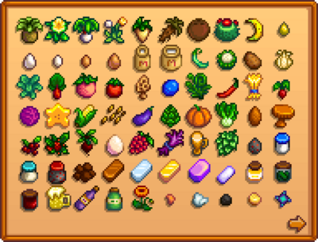
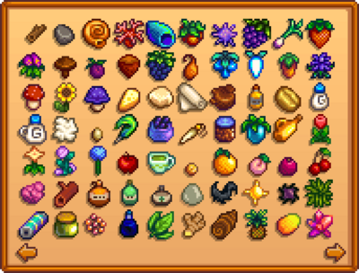
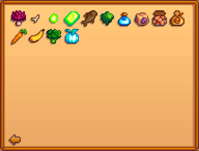
Page One
Page Two
Page Three
| Magma Cap | Bone Fragment | Radioactive Ore | Radioactive Bar | Smoked Fish (any) | Moss | Mystic Syrup | Raisins | Dried Fruit (any) | Dried Mushrooms (any) |
| Carrot | Summer Squash | Broccoli | Powdermelon |
Achievements
There are 3 Achievements associated with Shipping.
- Polyculture (Ship 15 of each crop)
- Monoculture (Ship 300 of one crop)
- Full Shipment (Ship every item)
Polyculture
There are exactly 28 Crops that must be shipped to earn the Polyculture achievement ("Ship 15 of each crop"):
Spring Crops
- Cauliflower
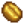
Coffee Bean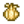
Garlic- Green Bean
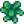
Kale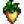
Parsnip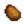
Potato- Rhubarb
- Strawberry
Summer Crops
- Blueberry
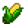
Corn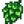
Hops- Hot Pepper
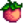
Melon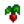
Radish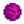
Red Cabbage- Starfruit
 Tomato
Tomato- Wheat
Fall Crops
Monoculture
To earn the Monoculture achievement ("Ship 300 of one crop"), one of 33 Crops can be chosen -- any of the 28 crops listed above, or
- Ancient Fruit
- Blue Jazz
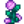
Fairy Rose- Summer Spangle
- Tulip
Full Shipment
To earn the Full Shipment achievement ("Ship every item"), at least one of every item shown on the Shipping Collection tab of the player menu must be shipped.
History
- 1.3.27: Made extra shipping bins purchasable at the Carpenter's Shop.
- 1.5: The default shipping bin can now be moved or demolished at Robin’s shop. Introduced the Mini-Shipping Bin.
- 1.6: Clam moved from Items Shipped to Fishing collection. End of day shipping screen category pages no longer take up the whole screen, as long as screen is beyond a minimum size.
- 1.6.9: Fixed colored objects (like Roe) using default color during animation when placed in shipping bin.